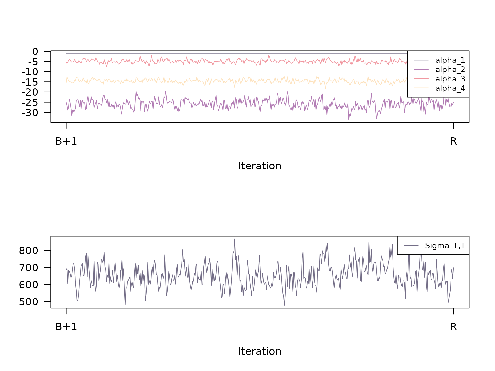

This vignette1 is a documentation of the estimation
procedure fit_model() in RprobitB.
Bayes estimation of the probit model
Bayes estimation of the probit model builds upon the work of McCulloch and Rossi (1994), Nobile (1998), Allenby and Rossi (1998), and Imai and Dyk (2005). A key ingredient is the concept of data augmentation, see Albert and Chib (1993): The idea is to treat the latent utilities in the model equation as additional parameters. Then, conditional on , the probit model constitutes a standard Bayesian linear regression set-up. Its posterior distribution can be approximated by iteratively drawing and updating each model parameter conditional on the other parameters (the so-called Gibbs sampling approach).
A priori, we assume the following (conjugate) parameter distributions:
, where denotes the -dimensional Dirichlet distribution with concentration parameter vector ,
, where denotes the -dimensional normal distribution with mean and covariance ,
, independent for all ,
, independent for all , where denotes the -dimensional inverse Wishart distribution with degrees of freedom and scale matrix ,
and .
These prior distributions imply the following conditional posterior distributions:
The class weights are drawn from the Dirichlet distribution where for , denotes the current absolute class size.2
Independently for all , we update the allocation variables from their conditional distribution
-
The class means are updated independently for all via where
,
,
.
The class covariance matrices are updated independently for all via where and .
Independently for all and and conditionally on the other components, the utility vectors follow a -dimensional truncated multivariate normal distribution, where the truncation points are determined by the choices . To sample from a truncated multivariate normal distribution, we apply a sub-Gibbs sampler, following the approach of Geweke (1998): where denotes the vector without the element , denotes the univariate normal distribution, and where denotes the th element of , the th row without the th entry, and the coefficient matrices and , respectively, without the th column.
-
Updating the fixed coefficient vector is achieved by applying the formula for Bayesian linear regression of the regressors on the regressands , i.e. where
and .
-
Analogously to , the random coefficients are updated independently via where
and .
-
The error term covariance matrix is updated by means of $$\begin{equation} \Sigma \mid n_{\Sigma_0}, V_{\Sigma_0}, U, W, \alpha, X, \beta \sim W^{-1}_{J-1}(n_{\Sigma_0} + NT, V_{\Sigma_0} + S), \\ \end{equation}$$ where
and .
Parameter normalization
Samples obtained from the updating scheme described above lack identification (except for and draws), compare to the vignette on the model definition. Therefore, subsequent to the sampling, the following normalizations are required for the th updates in each iterations :
,
, ,
, , ,
, ,
, , and
,
where either with the th diagonal element of , , or alternatively for some coordinate of the th draw for the coefficient vector . Here, is any positive constant (typically 1). The preferences will be flipped if , which only is the case if .
Burn-in and thinning
The theory behind Gibbs sampling constitutes that the sequence of samples produced by the updating scheme is a Markov chain with stationary distribution equal to the desired joint posterior distribution. It takes a certain number of iterations for that stationary distribution to be approximated reasonably well. Therefore, it is common practice to discard the first out of samples (the so-called burn-in period). Furthermore, correlation between nearby samples should be expected. In order to obtain independent samples, we consider only every th sample when computing Gibbs sample statistics like expectation and standard deviation. The independence of the samples can be verified by computing the serial correlation and the convergence of the Gibbs sampler can be checked by considering trace plots, see below.
The fit_model() function
The Gibbs sampling scheme described above can be executed by applying the function
fit_model(data = data)where data must be an RprobitB_data object
(see the vignette about choice data). The function has the following
optional arguments:
scale: A character which determines the utility scale. It is of the form"<parameter> := <value>", where<parameter>is either the name of a fixed effect orSigma_<j>,<j>for the<j>th diagonal element ofSigma, and<value>is the value of the fixed parameter (i.e. introduced above). Per defaultscale = "Sigma\_1,1 := 1", i.e. the first error-term variance is fixed to 1.R: The number of iterations of the Gibbs sampler. The default isR = 10000.B: The length of the burn-in period, i.e. a non-negative number of samples to be discarded. The default isB = R/2.Q: The thinning factor for the Gibbs samples, i.e. only everyQth sample is kept. The default isQ = 1.print_progress: A boolean, determining whether to print the Gibbs sampler progress.-
prior: A named list of parameters for the prior distributions (their default values are documented in thecheck_prior()function):mu_alpha_0: The mean vector of lengthP_fof the normal prior foralpha.Sigma_alpha_0: The covariance matrix of dimensionP_fxP_fof the normal prior foralpha.delta: The concentration parameter of length 1 of the Dirichlet prior fors.mu_b_0: The mean vector of lengthP_rof the normal prior for eachb_c.Sigma_b_0: The covariance matrix of dimensionP_rxP_rof the normal prior for eachb_c.n_Omega_0: The degrees of freedom (a natural number greater thanP_r) of the Inverse Wishart prior for eachOmega_c.V_Omega_0: The scale matrix of dimensionP_rxP_rof the Inverse Wishart prior for eachOmega_c.n_Sigma_0: The degrees of freedom (a natural number greater thanJ - 1) of the Inverse Wishart prior forSigma.V_Sigma_0: The scale matrix of dimensionJ-1xJ-1of the Inverse Wishart prior forSigma.
latent_classes: A list of parameters specifying the number and the updating scheme of latent classes, see the vignette on modeling heterogeneity fitting.
Example
In the
previous vignette on choice data, we introduced the
train_choice data set that contains 2922 choices between
two fictional train route alternatives. The following lines fit a probit
model that explains the chosen trip alternatives (choice)
by their price, time, number of
changes, and level of comfort (the lower this
value the higher the comfort). For normalization, the first linear
coefficient, the price, was fixed to -1, which
allows to interpret the other coefficients as monetary values:
set.seed(1)
form <- choice ~ price + time + change + comfort | 0
data <- prepare_data(form = form, choice_data = train_choice, id = "deciderID", idc = "occasionID")
model_train <- fit_model(
data = data,
scale = "price := -1"
)The estimated coefficients (using the mean of the Gibbs samples as a point estimate) can be printed via
coef(model_train)
#> Estimate (sd)
#> 1 price -1.00 (0.00)
#> 2 time -25.81 (2.18)
#> 3 change -4.88 (0.88)
#> 4 comfort -14.49 (0.94)The results indicate that the deciders value one hour travel time by about 25€, an additional change by 5€, and a more comfortable class by 14€.3
Checking the Gibbs samples
The Gibbs samples are saved in list form in the
RprobitB_fit object at the entry
"gibbs_samples", i.e.
str(model_train$gibbs_samples, max.level = 2, give.attr = FALSE)
#> List of 2
#> $ gibbs_samples_raw:List of 2
#> ..$ alpha: num [1:1000, 1:4] -0.000713 -0.023068 -0.030523 -0.034482 -0.036309 ...
#> ..$ Sigma: num [1:1000, 1] 1.09 1.11 1.04 1.06 1.01 ...
#> $ gibbs_samples_nbt:List of 2
#> ..$ alpha: num [1:500, 1:4] -1 -1 -1 -1 -1 -1 -1 -1 -1 -1 ...
#> ..$ Sigma: num [1:500, 1] 687 696 605 686 677 ...This object contains 2 elements:
gibbs_samples_rawis a list of the raw samples from the Gibbs sampler,and
gibbs_samples_nbtare the Gibbs samples used for parameter estimates, i.e. the normalized and thinned Gibbs samples after the burn-in.
Calling the summary function on the estimated
RprobitB_fit object yields additional information about the
Gibbs samples gibbs_samples_nbt. You can specify a list
FUN of functions that compute any point estimate of the
Gibbs samples4, for example
meanfor the arithmetic mean,mode_approxfor the (approximated) conditional posterior mode,stats::sdfor the standard deviation,R_hatfor the Gelman-Rubin statistic (Gelman and Rubin 1992) 5,or custom statistics like the absolute difference between the median and the mean.
summary(model_train,
FUN = c(
"mean" = mean,
"mode" = mode_approx,
"sd" = stats::sd,
"R^" = R_hat,
"custom_stat" = function(x) abs(mean(x) - median(x))
)
)
#> Probit model
#> Formula: choice ~ price + time + change + comfort | 0
#> R: 1000, B: 500, Q: 1
#> Level: Utility differences with respect to alternative 'B'.
#> Scale: Coefficient of effect 'price' (alpha_1) fixed to -1.
#>
#> Gibbs sample statistics
#> mean mode sd R^ custom_stat
#> alpha
#>
#> 1 -1.00 -1.00 0.00 1.00 0.00
#> 2 -25.81 -25.59 2.18 1.00 0.06
#> 3 -4.88 -5.16 0.88 1.00 0.04
#> 4 -14.49 -14.54 0.94 1.00 0.02
#>
#> Sigma
#>
#> 1,1 657.41 632.46 67.16 1.01 4.07Calling the plot method with the additional argument
type = "trace" plots the trace of the Gibbs samples
gibbs_samples_nbt:

Additionally, we can visualize the serial correlation of the Gibbs
samples via the argument type = "acf". The boxes in the
top-right corner state the total sample size TSS (here R -
B = 10000 - 5000 = 5000), the effective sample size ESS,
and the factor by which TSS is larger than ESS.

Here, the effective sample size is the value
,
where
is the auto correlation between the chain offset by
positions. The auto correlations are estimated via the
stats::acf() function.
Model transformation after estimation
The transform method can be used to transform an
RprobitB_fit object in three ways:
- change the length
Bof the burn-in period, for example
model_train <- transform(model_train, B = 1)- change the thinning factor
Qof the Gibbs samples, for example
model_train <- transform(model_train, Q = 100)- or change the model normalization
scale, for example
model_train <- transform(model_train, scale = "Sigma_1 := 1")